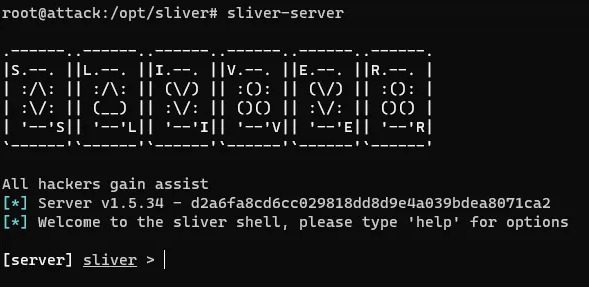

Jason Summers
With decades of expertise in complex problem-solving and web development, I bring a dynamic blend of skills and a diverse background to the IT arena. My journey as a seasoned programmer and freelance web developer has positioned me to seamlessly transition into roles encompassing web development, application security, and security engineering. I am deeply passionate about creating secure user-friendly applications and driven to leverage my extensive background to forge impactful solutions in this field. My commitment to continuous learning and adaptation shines through as I aim to not only protect but also enhance the digital frameworks that power our world. Eager to contribute my diverse expertise, I am looking for opportunities where innovation in web development and security is not just welcomed but celebrated.
Experience
Web Developer
Leveraging a solid foundation in web development and responsive user-friendly design, I have successfully designed and implemented applications that enhance operational efficiencies while ensuring robust security protocols as well as utilizing effective SEO strategies.
My project, T.R.E.D (Tire Replacement Evaluation Device) , is a prime example where I used JavaScript to streamline procedures and integrate complex algorithms that adhere to stringent company standards. This tool not only improves operational workflows but also ensures ease of use for users and a responsive mobile first design.
Currently, I am developing a website for a small business that focuses on marketing and providing a platform for customers to reach out and schedule appointments. This project involves creating dynamic and engaging web pages, integrating pricing solutions, and ensuring a seamless user experience. My experience in building this website highlights my strong web development skills and my ability to create user-friendly, responsive designs. I am well-positioned for roles that require a deep understanding of web development, front-end and back-end integration, and delivering high-quality web solutions.
Cybersecurity Student
In my pursuit of hands-on experience in cybersecurity, I have independently developed and managed a series of personal projects that simulate real-world security challenges.
I constructed a comprehensive environment that emulates adversary threat attacks, allowing for the monitoring and analysis of EDR telemetry and the automation of detection and response protocols. I also established and fine-tuned an ELK stack SIEM system to oversee threat events and refine alert mechanisms. Utilizing tools like tcpdump and Wireshark, I captured and dissected network traffic across various protocols to understand and mitigate potential threats.
My technical expertise extends to deploying Sysmon and event logs for the identification and examination of malicious activities. Furthermore, I have leveraged my programming skills in Python to write scripts that automate file permissions based on a predefined access list and develop a key logging tool that captures keystrokes, storing them securely for analysis.
These projects not only enhanced my technical acumen but also deepened my practical understanding of complex cybersecurity landscapes.
State Inspection Technician
In my extensive 20-year career, I have honed my skills in leading high-performance teams and managing complex business operations within a Fortune 100 company environment, achieving a 20% efficiency increase and significant reductions in quality comebacks. My role involved orchestrating cross-departmental collaboration to streamline operations and enhance profitability, demonstrating my capability to handle and resolve intricate challenges that align with rigorous company and state standards.
My commitment to maintaining high standards of compliance with regulatory bodies like the Maryland State Police showcases my meticulous attention to detail and adaptability to evolving regulations, traits that are critical in the cybersecurity field. Furthermore, I effectively bridge the communication gap between technical teams and non-technical stakeholders, ensuring clear understanding and adherence to technical and safety standards.
As a primary trainer for new associates and management, I was responsible for introducing internal systems and operational procedures, reinforcing my leadership and educational skills. My experience in diagnosing complex vehicle systems and leading detailed investigations into technical problems translates seamlessly into cybersecurity, where similar analytical and problem-solving abilities are essential for identifying, assessing, and mitigating security threats. This diverse expertise makes me an ideal candidate for a role in cybersecurity, where I aim to leverage my operational management, technical communication, and problem-solving skills to enhance security postures and protect organizational assets.
Education
Carroll Community College
GPA: 4.0
Coursera
GPA: N/A
FreeCodeCamp
GPA: N/A
Anne Arundel Community College
GPA: 3.8
Skills
- SIEM - Splunk | ELK Stack
- SQL
- Incident Response | EDR
- Web Application Security
- Network Security
- Wireshark | tcpdump
- Snort | Zeek
- NMAP | Metasploit
- Burp Suite
- Malware Analysis
- Sysmon | Event & Log Analysis
- HTML5 | CSS3
- JavaScript | jQuery
- Bootstrap
- React
- Node.js | Express
- MongoDB | MySQL
- RESTful APIs
- Git | GitHub
- Responsive Design
- Webpack | Gulp
- Cross-Browser Compatibility
Interests
When I'm not working on projects, learning, or keeping up to date on tech news and the latest trends, I enjoy disconnecting and being outside with my family. I live in a rural area and take pleasure in working in the yard, gardening, and caring for our chickens.
When forced indoors, I relish quality family time, watching TV, movies, and playing video games. I also like to stay involved with the tech communities and engage with others on Discord and LinkedIn.
Certifications
- FreeCodeCamp - Responsive Web Development
- Google Cybersecurity Professional Certificate
- CompTIA Security+
- TryHackMe - Pre Security | Introduction to Cybersecurity | SOC Level 1 | Cyber Defense
Projects
Adversary SOC Analyst Emulation
A simulation environment for training SOC analysts, emulating adversary threats to hone incident response skills.
Blog Posts
AI Overlord Chronicles: A Fun Yet Stern Warning

From Tech to Tech: My Journey From Automotive to I.T.